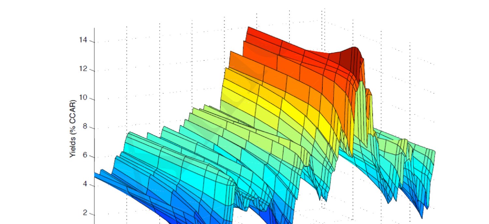

28. Fixed Income Asset and Term Structure
本章建模无违约 (default-free) 债券与收益率期限结构。核心洞见：无违约 ≠ 无风险——债券永不违约，但价格波动仍给投资者带来风险；建模无违约债券就是建模 SDF，别无其他 (Remark 28.1)。三种模型：(1) 主成分因子模型（§28.3.1，对数收益率向量 \(\mathbf y_t\) 做 PCA，SDF \(M^y_{t+1}=a+\mathbf b'(\mathbf y_{t+1}-\boldsymbol\mu_{\mathbf y})\) 28.8，前三个 PC 因子恰为收益率曲线的水平/斜率/曲率因子）；(2) 单因子仿射模型（§28.3.2，标量状态 \(x_t\) 服从 AR(1)，对数 SDF 为同方差仿射 28.12，"猜测验证"得对数价格 \(p_{n,t}=a_n+b_n x_t\) 28.24 的递推 28.25/28.26，债券风险溢价 \(rp_{n,t+1}=b_{n-1}\lambda\sigma^2\) 28.29 为常数）；(3) 多因子仿射模型（§28.3.3，\(K\) 维状态 \(\mathbf x_t\) 服从 VAR(1)，对数 SDF 异方差仿射 28.32/风险价格 \(\boldsymbol\lambda_t=\boldsymbol\lambda_0+\boldsymbol\Lambda_1\mathbf x_t\) 时变 28.33，得 \(p_{n,t}=a_n+\mathbf b_n'\mathbf x_t\) 28.42 与时变债券风险溢价 28.47）。还讨论实际 vs 名义 SDF 的关系 \(\hat M_{t+s}=M_{t+s}/\vartheta_{t+s}\)（通胀 28.7）。
This chapter models default-free bonds and the term structure of yields. Key insight: default-free ≠ risk-free — the bond never defaults, but its price fluctuation still creates risk for the investor; modeling a default-free bond is just modeling the SDF, nothing else (Remark 28.1). Three models: (1) principal-component factor model (§28.3.1, PCA on the log-yield vector \(\mathbf y_t\), SDF \(M^y_{t+1}=a+\mathbf b'(\mathbf y_{t+1}-\boldsymbol\mu_{\mathbf y})\) 28.8; the first three PC factors are exactly the yield curve's level/slope/curvature factors); (2) single-factor affine model (§28.3.2, scalar state \(x_t\) following AR(1), log SDF a homoskedastic affine 28.12, "guess and verify" gives the log price \(p_{n,t}=a_n+b_n x_t\) 28.24 with recursions 28.25/28.26, and constant bond risk premium \(rp_{n,t+1}=b_{n-1}\lambda\sigma^2\) 28.29); (3) multi-factor affine model (§28.3.3, \(K\)-dim state \(\mathbf x_t\) following VAR(1), log SDF a heteroskedastic affine 28.32 with time-varying price of risk \(\boldsymbol\lambda_t=\boldsymbol\lambda_0+\boldsymbol\Lambda_1\mathbf x_t\) 28.33, giving \(p_{n,t}=a_n+\mathbf b_n'\mathbf x_t\) 28.42 and a time-varying bond risk premium 28.47). Also discusses the real vs. nominal SDF relationship \(\hat M_{t+s}=M_{t+s}/\vartheta_{t+s}\) (inflation, 28.7).
28.1 Setup
聚焦 \(t+n\) 到期、支付 1 的无违约债券（注：无违约 ≠ 无风险，债券永不违约但价格波动仍带来风险）。\(t\) 时价格 \(P_{n,t}\)、对数价格 \(p_{n,t}\equiv\ln P_{n,t}\)。SDF \(M_{t+s}\)（从 \(t+s-1\) 到 \(t+s\)）给债券定价 (28.1)：
Focus on a default-free bond maturing at \(t+n\) with payoff 1 (note: default-free ≠ risk-free — the bond never defaults but price fluctuation still creates risk). Time-\(t\) price \(P_{n,t}\), log price \(p_{n,t}\equiv\ln P_{n,t}\). The SDF \(M_{t+s}\) (from \(t+s-1\) to \(t+s\)) prices the bond (28.1):
$$P_{n,t}=\mathbb E_t\!\left[\prod_{s=1}^n M_{t+s}\cdot1\right]\Rightarrow p_{n,t}=\ln\mathbb E_t\!\left[\prod_{s=1}^n M_{t+s}\right]\tag{28.1}$$
收益率 \(Y_{n,t}=(\frac1{P_{n,t}})^{\frac1n}\)，对数收益率 \(y_{n,t}\equiv\ln Y_{n,t}=-\frac1n p_{n,t}\) (28.2)。持有 \(t\to t+1\) 的毛收益 \(R_{n,t+1}=\frac{P_{n-1,t+1}}{P_{n,t}}\)，对数毛收益 \(r_{n,t+1}\equiv\ln R_{n,t+1}=p_{n-1,t+1}-p_{n,t}\) (28.3/28.4)。远期毛利率 \(F_{n,t}=\frac{P_{n,t}}{P_{n+1,t}}\)，对数远期 \(f_{n,t}=\ln F_{n,t}=p_{n,t}-p_{n+1,t}\)。
Remark 28.1 由上述定义可见，建模无违约债券就是建模 SDF，别无其他。
28.2 Stochastic Discount Factor: Real vs. Nominal
设 \(M_{t+s}\) 为实际 SDF、\(p_{n,t}\) 为实际对数价格、支付为 1 单位实际量，则 (28.1) 成立 (28.5)：\(p_{n,t}=\ln\mathbb E_t[\prod_{s=1}^n M_{t+s}]\)。设名义 SDF \(\hat M_{t+s}\)、名义对数价格 \(\hat p_{n,t}\)、支付为 1 单位名义量，则 (28.6)：\(\hat p_{n,t}=\ln\mathbb E_t[\prod_{s=1}^n\hat M_{t+s}]\)。
实际与名义 SDF 的关系：设 \(t+s-1\) 到 \(t+s\) 的毛通胀率 \(\vartheta_{t+s}\)，则 \(t+n\) 时 1 单位名义现金流实为 \((\prod_{s=1}^n\vartheta_{t+s})^{-1}\) 单位实际现金流。代入 (28.5) 给 1 单位名义支付定价应等于 (28.6) 的 \(\hat p_{n,t}\)，由此恒等式 (28.7)：
Yield \(Y_{n,t}=(\frac1{P_{n,t}})^{\frac1n}\), log yield \(y_{n,t}\equiv\ln Y_{n,t}=-\frac1n p_{n,t}\) (28.2). Gross return of holding \(t\to t+1\): \(R_{n,t+1}=\frac{P_{n-1,t+1}}{P_{n,t}}\), log gross return \(r_{n,t+1}\equiv\ln R_{n,t+1}=p_{n-1,t+1}-p_{n,t}\) (28.3/28.4). Forward gross rate \(F_{n,t}=\frac{P_{n,t}}{P_{n+1,t}}\), log forward \(f_{n,t}=\ln F_{n,t}=p_{n,t}-p_{n+1,t}\).
Remark 28.1 From the definitions above, modeling a default-free bond is just modeling the SDF, nothing else.
28.2 Stochastic Discount Factor: Real vs. Nominal
Let \(M_{t+s}\) be the real SDF, \(p_{n,t}\) the real log price, with payoff 1 in real quantity; then (28.1) holds (28.5): \(p_{n,t}=\ln\mathbb E_t[\prod_{s=1}^n M_{t+s}]\). Let the nominal SDF be \(\hat M_{t+s}\), nominal log price \(\hat p_{n,t}\), payoff 1 in nominal quantity; then (28.6): \(\hat p_{n,t}=\ln\mathbb E_t[\prod_{s=1}^n\hat M_{t+s}]\).
Relationship between real and nominal SDF: let the gross inflation rate from \(t+s-1\) to \(t+s\) be \(\vartheta_{t+s}\); then 1 nominal cash flow at \(t+n\) is actually \((\prod_{s=1}^n\vartheta_{t+s})^{-1}\) real cash flow. Substituting into (28.5) to price 1 nominal payoff should equal \(\hat p_{n,t}\) in (28.6), giving the identity (28.7):
$$\hat M_{t+s}=\frac{M_{t+s}}{\vartheta_{t+s}}\tag{28.7}$$
28.3 Term Structure Models
此前 SDF 针对风险支付/收益（含无风险利率，但忽略期限结构与无风险利率动态）。实际上"无风险利率"是产生固定现金流、无违约但并非真正无风险的证券收益（像风险资产一样有动态与随机冲击），故称收益率 (yields)。\(\mathbf y_t\) 为 \(N\times1\) 向量，第 \(n\) 元 \(y_{n,t}\) 是 \(t+n\) 到期无违约证券的收益率 (28.2)。\(\mathbf y_t\) 可解释为各时点无违约收益的横截面——即收益率曲线 (yield curve)。Figure 28.1 给收益率曲线的时间序列（1970 Q1 – 2005 Q4），可见曲线整体上下移动（水平）、有时上斜/平/下斜（斜率）、有时凸/凹（曲率）。
Previously the SDF priced risky payoffs/returns (including the risk-free rate, but ignoring term structure and risk-free-rate dynamics). In fact "risk-free rates" are returns on securities generating fixed cash flow, default-free but not really risk-free (with dynamics and random shocks like risky assets), so we call them yields. \(\mathbf y_t\) is an \(N\times1\) vector, the \(n\)th element \(y_{n,t}\) being the yield of the default-free security maturing at \(t+n\) (28.2). \(\mathbf y_t\) can be interpreted as a cross-section of default-free returns at each time point — a yield curve. Figure 28.1 gives the time series of the yield curve (1970 Q1 – 2005 Q4), showing the curve moving up/down as a whole (level), sometimes upward/flat/downward sloping (slope), and sometimes convex/concave (curvature).

28.3.1 Principal Component Factors
对 \(\mathbf y_t\) 做与 §23.3 对 \(\mathbf z_t\) 完全相同的 PCA。返回空间内对数收益率 \(\mathbf y_{t+1}\) 的 SDF (28.8)：
Do exactly the same PCA on \(\mathbf y_t\) as §23.3 on \(\mathbf z_t\). The SDF for log yields \(\mathbf y_{t+1}\) within the return space (28.8):
$$M^y_{t+1}=a+\mathbf b'\left(\mathbf y_{t+1}-\boldsymbol\mu_{\mathbf y}\right)\tag{28.8}$$
\(\boldsymbol\mu_{\mathbf y}=\mathbb E[\mathbf y_{t+1}]\)。注意此处用 \(a\) 而非 1，因对数收益率不是超额收益，§23.1.3 缩放无关性不再适用。该 SDF 成立因任意 \(\mathbf y_{t+1}\) 线性组合可写为常数加 \(\tilde{\mathbf f}_{t+1}\equiv\mathbf y_{t+1}-\boldsymbol\mu_{\mathbf y}\) 的线性组合，再由命题 6.2 得 \(M^y_{t+1}=a+\mathbf b'\tilde{\mathbf f}\)。特征分解 \(\boldsymbol\Sigma_{\mathbf y}=\mathbf Q_{\mathbf y}\boldsymbol\Lambda_{\mathbf y}\mathbf Q_{\mathbf y}'\)，PC 因子 \(\mathbf x_{t+1}=\mathbf Q_{\mathbf y}'\mathbf y_{t+1}\) (28.9)，均值 \(\boldsymbol\mu_{\mathbf x}=\mathbf Q_{\mathbf y}'\boldsymbol\mu_{\mathbf y}\)。
Proposition 28.1 对数收益率 \(\mathbf y_{t+1}\) 的 SDF 可表为 (28.9) 定义的 \(N\) 个 PC 因子 \(\mathbf x_{t+1}\) 的线性组合 (28.10)：\(M^y_{t+1}=\underbrace{a-\mathbf b'\boldsymbol\mu_{\mathbf y}}_{\text{const}}+\underbrace{\mathbf b'\mathbf Q_{\mathbf y}}_{\equiv\boldsymbol\beta'}\mathbf x_{t+1}\)。（证：由 \(\mathbf y_{t+1}=\mathbf Q_{\mathbf y}\mathbf x_{t+1}\) 代入 28.8。）
Remark 28.2 / 28.3 (28.8) 与 (28.10) 同构；(28.10) 的好处是按特征值排序后只有前几个 PC 因子重要（(28.8) 无此排序）。若选前三个 PC 因子，得简约模型（未必最优）。
水平、斜率、曲率主成分因子：最重要的前三个 PC 因子是： - 水平因子 (level factor)：支配收益率曲线的水平（共动）——Figure 28.1 中曲线几乎一起上下，为第一阶效应； - 斜率因子 (slope factor)：支配曲线斜率——有时上斜（多数时候）、有时平或微下斜； - 曲率因子 (curvature factor)：支配曲线曲率——有时近直线、有时明显凸或凹。
28.3.2 Single Factor Affine Model
设标量状态 \(x_t\) 服从 AR(1) (28.11)：\(x_{t+1}=\mu+\phi x_t+\sigma\varepsilon_{t+1}\)，\(\varepsilon\sim\mathcal N(0,1)\)。\(M^y_{t+1}\) 为给 \(t+1\) 支付 1 的一期零息无违约债券定价的 SDF。设对数 SDF \(m^y_{t+1}\equiv\ln M^y_{t+1}\) 为同方差仿射函数 (28.12)：
\(\boldsymbol\mu_{\mathbf y}=\mathbb E[\mathbf y_{t+1}]\). Note we use \(a\) instead of 1 because log yields are not excess returns, so §23.1.3's scaling irrelevance no longer applies. The SDF works because any linear combination of \(\mathbf y_{t+1}\) can be expressed as a constant plus a linear combination of \(\tilde{\mathbf f}_{t+1}\equiv\mathbf y_{t+1}-\boldsymbol\mu_{\mathbf y}\), then by Proposition 6.2 \(M^y_{t+1}=a+\mathbf b'\tilde{\mathbf f}\). Eigen-decompose \(\boldsymbol\Sigma_{\mathbf y}=\mathbf Q_{\mathbf y}\boldsymbol\Lambda_{\mathbf y}\mathbf Q_{\mathbf y}'\), PC factors \(\mathbf x_{t+1}=\mathbf Q_{\mathbf y}'\mathbf y_{t+1}\) (28.9), means \(\boldsymbol\mu_{\mathbf x}=\mathbf Q_{\mathbf y}'\boldsymbol\mu_{\mathbf y}\).
Proposition 28.1 The SDF for log yields \(\mathbf y_{t+1}\) can be expressed as a linear combination of the \(N\) PC factors \(\mathbf x_{t+1}\) defined by (28.9) (28.10): \(M^y_{t+1}=\underbrace{a-\mathbf b'\boldsymbol\mu_{\mathbf y}}_{\text{const}}+\underbrace{\mathbf b'\mathbf Q_{\mathbf y}}_{\equiv\boldsymbol\beta'}\mathbf x_{t+1}\). (Proof: substitute \(\mathbf y_{t+1}=\mathbf Q_{\mathbf y}\mathbf x_{t+1}\) into 28.8.)
Remark 28.2 / 28.3 (28.8) and (28.10) are isomorphic; the benefit of (28.10) is that after eigenvalue ordering only the first couple of PC factors matter ((28.8) has no such ordering). Choosing the first three PC factors gives a parsimonious model (not necessarily the best-performing).
Level, slope, and curvature PC factors: the most important first three PC factors are: - Level factor: governs the level of the yield curve (comovement) — in Figure 28.1 the curve moves up/down almost together, a first-order effect; - Slope factor: governs the slope — sometimes upward (most times), sometimes flat or slightly downward sloping; - Curvature factor: governs the curvature — sometimes almost a straight line, sometimes obviously convex or concave.
28.3.2 Single Factor Affine Model
Suppose the scalar state \(x_t\) follows AR(1) (28.11): \(x_{t+1}=\mu+\phi x_t+\sigma\varepsilon_{t+1}\), \(\varepsilon\sim\mathcal N(0,1)\). \(M^y_{t+1}\) is the SDF pricing the one-period zero-coupon default-free bond with payoff 1 at \(t+1\). Let the log SDF \(m^y_{t+1}\equiv\ln M^y_{t+1}\) be a homoskedastic affine function (28.12):
$$m^y_{t+1}=-\delta_0-\delta_1 x_t-\tfrac12\sigma^2\lambda^2-\lambda\sigma\varepsilon_{t+1}\tag{28.12}$$
论证 (28.12) 三理由：(1) \(m^y\) 关于 \(x_{t+1}\) 线性；(2) 一期对数毛收益 \(r_{1,t+1}=-\ln P_{1,t}=-\ln\mathbb E_t[M^y_{t+1}]=\delta_0+\delta_1 x_t\) (28.13/28.14)——(28.12) 正是为得 (28.14) 反向工程而来；(3) 可映射到代表性模型：CRRA 代理人 \(U_t=\sum_{\tau\ge t}\delta^\tau\frac{C_\tau^{1-\gamma}-1}{1-\gamma}\)（\(\delta\in(0,1)\)），由 (1.12) \(M^y_{t+1}=\delta(\frac{C_{t+1}}{C_t})^{-\gamma}\)，\(m^y=\ln\delta-\gamma\Delta c_{t+1}\) (28.15)；令 \(\Delta c_{t+1}\) 为状态变量服从 AR(1) (28.16)，代入得 \(m^y=\ln\delta-\gamma\theta_c-\gamma\phi_c\Delta c_t-\gamma\sigma\varepsilon_{t+1}\) (28.17)，(28.16)↔(28.11)、(28.17)↔(28.12)。
对数价格：由 (28.13)/(28.14) 得一期债券对数价格 \(p_{1,t}=-\delta_0-\delta_1 x_t\) (28.18)。\(n\) 期债券对数价格猜测 \(p_{n,t}=a_n+b_n x_t\) (28.19)，"猜测验证"得递推 (28.25)/(28.26) 与边界 (28.27)/(28.28)：
Justify (28.12) with three reasons: (1) \(m^y\) linear in \(x_{t+1}\); (2) the one-period log gross return \(r_{1,t+1}=-\ln P_{1,t}=-\ln\mathbb E_t[M^y_{t+1}]=\delta_0+\delta_1 x_t\) (28.13/28.14) — (28.12) is reverse-engineered precisely to obtain (28.14); (3) it maps to a representative model: a CRRA agent \(U_t=\sum_{\tau\ge t}\delta^\tau\frac{C_\tau^{1-\gamma}-1}{1-\gamma}\) (\(\delta\in(0,1)\)), by (1.12) \(M^y_{t+1}=\delta(\frac{C_{t+1}}{C_t})^{-\gamma}\), \(m^y=\ln\delta-\gamma\Delta c_{t+1}\) (28.15); letting \(\Delta c_{t+1}\) be the state variable following AR(1) (28.16), substitution gives \(m^y=\ln\delta-\gamma\theta_c-\gamma\phi_c\Delta c_t-\gamma\sigma\varepsilon_{t+1}\) (28.17), with (28.16)↔(28.11), (28.17)↔(28.12).
Log price: from (28.13)/(28.14), the one-period bond log price \(p_{1,t}=-\delta_0-\delta_1 x_t\) (28.18). For the \(n\)-period bond, guess \(p_{n,t}=a_n+b_n x_t\) (28.19); "guess and verify" gives the recursions (28.25)/(28.26) with boundary (28.27)/(28.28):
$$a_n=a_{n-1}-\delta_0+b_{n-1}(\mu-\lambda\sigma^2)+\tfrac12 b_{n-1}^2\sigma^2,\quad b_n=b_{n-1}\phi-\delta_1,\quad a_1=-\delta_0,\quad b_1=-\delta_1\tag{28.25–28}$$
证明 / Proof：(28.19) 的猜测验证 (28.21)–(28.24) 与债券风险溢价 (28.29)
机械地 \(P_{n,t}=\mathbb E_t[M^y_{t+1}P_{n-1,t+1}]\Rightarrow p_{n,t}=\ln\mathbb E_t[e^{m^y_{t+1}+p_{n-1,t+1}}]\) (28.21)。代入对数 SDF (28.12) 与猜测 (28.19)、用 (28.11) 及对数正态，整理 (28.22)/(28.23)： $$a_n+b_n x_t=a_{n-1}-\delta_0+b_{n-1}(\mu-\lambda\sigma^2)+\tfrac12 b_{n-1}^2\sigma^2+(b_{n-1}\phi-\delta_1)x_t$$ 匹配系数即得 (28.25)/(28.26)，归纳证明 (28.19)、汇总 \(p_{n,t}=a_n+b_n x_t\) (28.24)。
债券风险溢价：\(n\) 期 \(rp_{n,t+1}=\ln\mathbb E_t[\frac{P_{n-1,t+1}}{P_{n,t}}]-\ln\frac1{P_{1,t}}\)，用 (28.24)/(28.23) 整理 \(=b_{n-1}\mu-b_{n-1}(\mu-\lambda\sigma^2)=b_{n-1}\lambda\sigma^2\) (28.29)，\(b_n=b_{n-1}\phi-\delta_1\)、\(b_1=-\delta_1\)、\(b_0=0\)。\(\blacksquare\)
Mechanically \(P_{n,t}=\mathbb E_t[M^y_{t+1}P_{n-1,t+1}]\Rightarrow p_{n,t}=\ln\mathbb E_t[e^{m^y_{t+1}+p_{n-1,t+1}}]\) (28.21). Substituting the log SDF (28.12) and guess (28.19), using (28.11) and log-normality, simplify (28.22)/(28.23): $$a_n+b_n x_t=a_{n-1}-\delta_0+b_{n-1}(\mu-\lambda\sigma^2)+\tfrac12 b_{n-1}^2\sigma^2+(b_{n-1}\phi-\delta_1)x_t$$ Matching coefficients gives (28.25)/(28.26), induction proves (28.19), summary \(p_{n,t}=a_n+b_n x_t\) (28.24).
Bond risk premia: \(n\)-maturity \(rp_{n,t+1}=\ln\mathbb E_t[\frac{P_{n-1,t+1}}{P_{n,t}}]-\ln\frac1{P_{1,t}}\), using (28.24)/(28.23) simplifies to \(b_{n-1}\mu-b_{n-1}(\mu-\lambda\sigma^2)=b_{n-1}\lambda\sigma^2\) (28.29), with \(b_n=b_{n-1}\phi-\delta_1\), \(b_1=-\delta_1\), \(b_0=0\). \(\blacksquare\)
债券风险溢价 (28.29)：\(rp_{n,t+1}=b_{n-1}\lambda\sigma^2\)（常数）。解读：度量长期（\(n\) 期）与短期（一期）无违约债券预期收益之差；因长短债风险程度不同（即便都无违约），此差一般非零；再次提醒无违约 ≠ 无风险，风险纯来自 SDF 的冲击（由底层状态 \(x_t\) 这一宏观变量产生）。识别：(1) 时间序列回归 \(x_{t+1}=\mu+\phi x_t+\sigma\varepsilon\) 识别 \(\mu,\phi,\sigma^2\)（设 \(x_t\) 可观测）；(2) 用 (28.2)/(28.24)：\(-ny_{n,t}=a_n+b_n x_t\) (28.30)，\(b_n\) 由 \(\delta_1,\phi\) 钉住、\(a_n\) 由 \(\delta_0,\mu,\lambda,\sigma^2\) 钉住；(3) \(\mu,\phi,\sigma^2\) 已识别，不失一般性设 \(\delta_1=1\)，只需识别 \(\delta_0,\lambda\)，解 \(\min_{\delta_0,\lambda}\sum_n\sum_t(-ny_{n,t}-a_n-b_n x_t)^2\)。
28.3.3 Multi-factor Affine Model
设 \(K\times1\) 状态向量 \(\mathbf x_t\) 服从 VAR(1) (28.31)：\(\mathbf x_{t+1}=\boldsymbol\mu+\boldsymbol\phi\mathbf x_t+\boldsymbol\Omega\boldsymbol\varepsilon_{t+1}\)，\(\boldsymbol\varepsilon\sim\mathcal N(\mathbf 0,\mathbf I_{K\times K})\)。对数 SDF 异方差仿射 (28.32)：
Bond risk premium (28.29): \(rp_{n,t+1}=b_{n-1}\lambda\sigma^2\) (constant). Interpretation: it measures the difference between expected returns of long-term (\(n\)-maturity) and short-term (one-period) default-free bonds; since their degrees of risk differ (even though both default-free), this difference is generally nonzero; it again reminds us default-free ≠ risk-free, with risk coming purely from SDF shocks (produced by the underlying state \(x_t\), a macro variable). Identification: (1) time-series regression \(x_{t+1}=\mu+\phi x_t+\sigma\varepsilon\) identifies \(\mu,\phi,\sigma^2\) (assuming \(x_t\) observable); (2) use (28.2)/(28.24): \(-ny_{n,t}=a_n+b_n x_t\) (28.30), \(b_n\) pinned by \(\delta_1,\phi\), \(a_n\) by \(\delta_0,\mu,\lambda,\sigma^2\); (3) \(\mu,\phi,\sigma^2\) already identified, WLOG set \(\delta_1=1\), only identify \(\delta_0,\lambda\), solving \(\min_{\delta_0,\lambda}\sum_n\sum_t(-ny_{n,t}-a_n-b_n x_t)^2\).
28.3.3 Multi-factor Affine Model
Suppose the \(K\times1\) state vector \(\mathbf x_t\) follows VAR(1) (28.31): \(\mathbf x_{t+1}=\boldsymbol\mu+\boldsymbol\phi\mathbf x_t+\boldsymbol\Omega\boldsymbol\varepsilon_{t+1}\), \(\boldsymbol\varepsilon\sim\mathcal N(\mathbf 0,\mathbf I_{K\times K})\). The log SDF is a heteroskedastic affine (28.32):
$$m^y_{t+1}=-\delta_0-\boldsymbol\delta_1'\mathbf x_t-\tfrac12\boldsymbol\lambda_t'\boldsymbol\Omega\boldsymbol\Omega'\boldsymbol\lambda_t-\boldsymbol\lambda_t'\boldsymbol\Omega\boldsymbol\varepsilon_{t+1}\tag{28.32}$$
异方差由时变风险价格 (28.33) 刻画：\(\boldsymbol\lambda_t=\boldsymbol\lambda_0+\boldsymbol\Lambda_1\mathbf x_t\)。(28.32) 是 (28.12) 的多元版。对数价格猜测 \(p_{n,t}=a_n+\mathbf b_n'\mathbf x_t\) (28.37)，"猜测验证"（见折叠推导）得递推 (28.43)/(28.44) 与边界 (28.45)/(28.46)：
Heteroskedasticity is characterized by the time-varying price of risk (28.33): \(\boldsymbol\lambda_t=\boldsymbol\lambda_0+\boldsymbol\Lambda_1\mathbf x_t\). (28.32) is the multivariate version of (28.12). Guess the log price \(p_{n,t}=a_n+\mathbf b_n'\mathbf x_t\) (28.37); "guess and verify" (see the collapsible derivation) gives the recursions (28.43)/(28.44) with boundary (28.45)/(28.46):
$$a_n=a_{n-1}-\delta_0+\mathbf b_{n-1}'(\boldsymbol\mu-\boldsymbol\Omega\boldsymbol\lambda_0)+\tfrac12\mathbf b_{n-1}'\boldsymbol\Omega\boldsymbol\Omega'\mathbf b_{n-1},\quad\mathbf b_n'=\mathbf b_{n-1}'(\boldsymbol\phi-\boldsymbol\Omega\boldsymbol\Lambda_1)-\boldsymbol\delta_1',\quad a_1=-\delta_0,\ \mathbf b_1=-\boldsymbol\delta_1\tag{28.43–46}$$
证明 / Proof：多元仿射 (28.39)–(28.42) 与时变债券风险溢价 (28.47)
由 (28.32)，一期对数毛收益 \(r_{1,t+1}=-\ln P_{1,t}=\delta_0+\boldsymbol\delta_1'\mathbf x_t\) (28.34/28.35)，故 \(p_{1,t}=-\delta_0-\boldsymbol\delta_1'\mathbf x_t\) (28.36)，给边界 (28.38) \(a_1=-\delta_0\)、\(\mathbf b_1=-\boldsymbol\delta_1\)。机械地 \(p_{n,t}=\ln\mathbb E_t[e^{m^y_{t+1}+p_{n-1,t+1}}]\) (28.39)，代入 (28.32) 与猜测 (28.37)、用 (28.31) 及对数正态，整理 (28.40)/(28.41) 后匹配系数得 (28.43)/(28.44)，归纳证明、汇总 \(p_{n,t}=a_n+\mathbf b_n'\mathbf x_t\) (28.42)。
债券风险溢价：\(rp_{n,t+1}=\ln\mathbb E_t[\frac{P_{n-1,t+1}}{P_{n,t}}]-\ln\frac1{P_{1,t}}\)，整理 \(=\mathbf b_{n-1}'\boldsymbol\Omega\boldsymbol\Omega'\boldsymbol\lambda_t=\mathbf b_{n-1}'(\boldsymbol\Omega\boldsymbol\Omega'\boldsymbol\lambda_0)+\mathbf b_{n-1}'(\boldsymbol\Omega\boldsymbol\Omega'\boldsymbol\Lambda_1)\mathbf x_t\) (28.47)，\(\mathbf b_n'=\mathbf b_{n-1}'(\boldsymbol\phi-\boldsymbol\Omega\boldsymbol\Lambda_1)-\boldsymbol\delta_1'\)、\(\mathbf b_1=-\boldsymbol\delta_1\)、\(\mathbf b_0=\mathbf 0\)。\(\blacksquare\)
By (28.32), the one-period log gross return \(r_{1,t+1}=-\ln P_{1,t}=\delta_0+\boldsymbol\delta_1'\mathbf x_t\) (28.34/28.35), so \(p_{1,t}=-\delta_0-\boldsymbol\delta_1'\mathbf x_t\) (28.36), giving boundary (28.38) \(a_1=-\delta_0\), \(\mathbf b_1=-\boldsymbol\delta_1\). Mechanically \(p_{n,t}=\ln\mathbb E_t[e^{m^y_{t+1}+p_{n-1,t+1}}]\) (28.39); substituting (28.32) and guess (28.37), using (28.31) and log-normality, simplify (28.40)/(28.41) and match coefficients to get (28.43)/(28.44), induction proves it, summary \(p_{n,t}=a_n+\mathbf b_n'\mathbf x_t\) (28.42).
Bond risk premia: \(rp_{n,t+1}=\ln\mathbb E_t[\frac{P_{n-1,t+1}}{P_{n,t}}]-\ln\frac1{P_{1,t}}\), simplifying to \(\mathbf b_{n-1}'\boldsymbol\Omega\boldsymbol\Omega'\boldsymbol\lambda_t=\mathbf b_{n-1}'(\boldsymbol\Omega\boldsymbol\Omega'\boldsymbol\lambda_0)+\mathbf b_{n-1}'(\boldsymbol\Omega\boldsymbol\Omega'\boldsymbol\Lambda_1)\mathbf x_t\) (28.47), with \(\mathbf b_n'=\mathbf b_{n-1}'(\boldsymbol\phi-\boldsymbol\Omega\boldsymbol\Lambda_1)-\boldsymbol\delta_1'\), \(\mathbf b_1=-\boldsymbol\delta_1\), \(\mathbf b_0=\mathbf 0\). \(\blacksquare\)
时变债券风险溢价 (28.47)：\(rp_{n,t+1}=\mathbf b_{n-1}'(\boldsymbol\Omega\boldsymbol\Omega'\boldsymbol\lambda_0)+\mathbf b_{n-1}'(\boldsymbol\Omega\boldsymbol\Omega'\boldsymbol\Lambda_1)\mathbf x_t\)。解读：(28.47) 是 (28.29) 的多元版；异方差不改变多少代数，只是让同一到期债券在不同时点有时变风险溢价，且结果是状态向量 \(\mathbf x_t\) 的仿射函数。\(\mathbf x_t\) 可含更多相关宏观变量；若维度过大，可做 PCA 抽取前几个（如前三）PC 因子。识别：(1) VAR 回归 \(\mathbf x_{t+1}=\boldsymbol\mu+\boldsymbol\phi\mathbf x_t+\boldsymbol\Omega\boldsymbol\varepsilon\) 识别 \(\boldsymbol\mu,\boldsymbol\phi,\boldsymbol\Omega\)（设 \(\mathbf x_t\) 可观测）；(2) \(-ny_{n,t}=a_n+\mathbf b_n'\mathbf x_t\) (28.48)，\(\mathbf b_n\) 由 \(\boldsymbol\delta_1,\boldsymbol\Lambda_1,\boldsymbol\Omega,\boldsymbol\phi\) 钉住、\(a_n\) 由 \(\delta_0,\boldsymbol\mu,\boldsymbol\lambda_0,\boldsymbol\Omega\) 钉住；(3) \(\boldsymbol\mu,\boldsymbol\phi,\boldsymbol\Omega\) 已识别，不失一般性设 \(\boldsymbol\delta_1=\mathbf 1\)、\(\boldsymbol\Lambda_1=\mathbf 1\)，只需识别 \(\delta_0,\boldsymbol\lambda_0\)，解 \(\min_{\delta_0,\boldsymbol\lambda_0}\sum_n\sum_t(-ny_{n,t}-a_n-\mathbf b_n'\mathbf x_t)^2\)，从而钉住全部兴趣参数。
Time-varying bond risk premium (28.47): \(rp_{n,t+1}=\mathbf b_{n-1}'(\boldsymbol\Omega\boldsymbol\Omega'\boldsymbol\lambda_0)+\mathbf b_{n-1}'(\boldsymbol\Omega\boldsymbol\Omega'\boldsymbol\Lambda_1)\mathbf x_t\). Interpretation: (28.47) is the multivariate version of (28.29); heteroskedasticity doesn't change the algebra much, but it ends up giving the bond of the same maturity a time-varying risk premium at different times, and the result is an affine function of the state vector \(\mathbf x_t\). \(\mathbf x_t\) can include more relevant macro variables; if too large, do PCA to extract the first few (e.g. first three) PC factors. Identification: (1) VAR regression \(\mathbf x_{t+1}=\boldsymbol\mu+\boldsymbol\phi\mathbf x_t+\boldsymbol\Omega\boldsymbol\varepsilon\) identifies \(\boldsymbol\mu,\boldsymbol\phi,\boldsymbol\Omega\) (assuming \(\mathbf x_t\) observable); (2) \(-ny_{n,t}=a_n+\mathbf b_n'\mathbf x_t\) (28.48), \(\mathbf b_n\) pinned by \(\boldsymbol\delta_1,\boldsymbol\Lambda_1,\boldsymbol\Omega,\boldsymbol\phi\), \(a_n\) by \(\delta_0,\boldsymbol\mu,\boldsymbol\lambda_0,\boldsymbol\Omega\); (3) \(\boldsymbol\mu,\boldsymbol\phi,\boldsymbol\Omega\) already identified, WLOG set \(\boldsymbol\delta_1=\mathbf 1\), \(\boldsymbol\Lambda_1=\mathbf 1\), only identify \(\delta_0,\boldsymbol\lambda_0\), solving \(\min_{\delta_0,\boldsymbol\lambda_0}\sum_n\sum_t(-ny_{n,t}-a_n-\mathbf b_n'\mathbf x_t)^2\), pinning down all parameters of interest.
References
- Ang, A. and M. Piazzesi (2003). A no-arbitrage vector autoregression of term structure dynamics with macroeconomic and latent variables. Journal of Monetary Economics 50(4), 745–787.
- Cochrane, J. H. (2005). Asset Pricing (Revised ed.). Princeton University Press.
- Vasicek, O. (1977). An equilibrium characterization of the term structure. Journal of Financial Economics 5(2), 177–188.